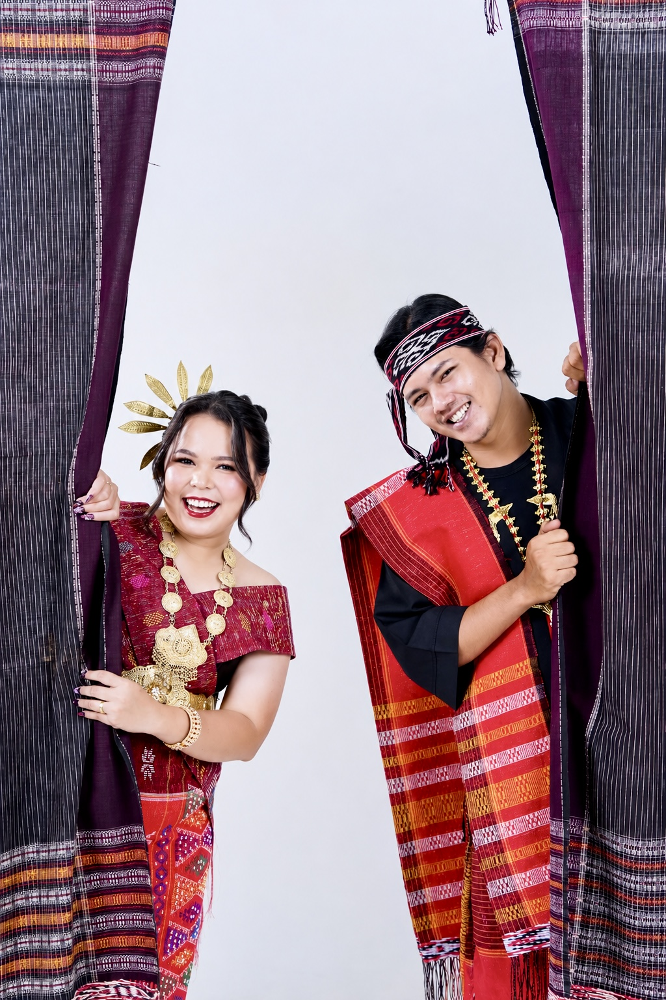
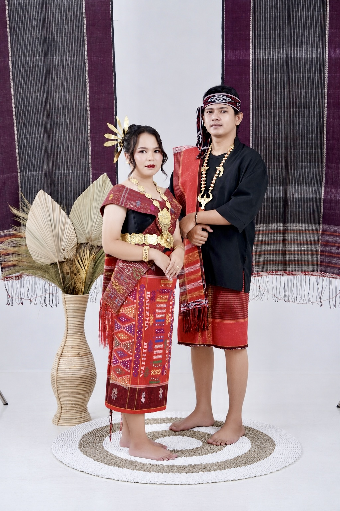
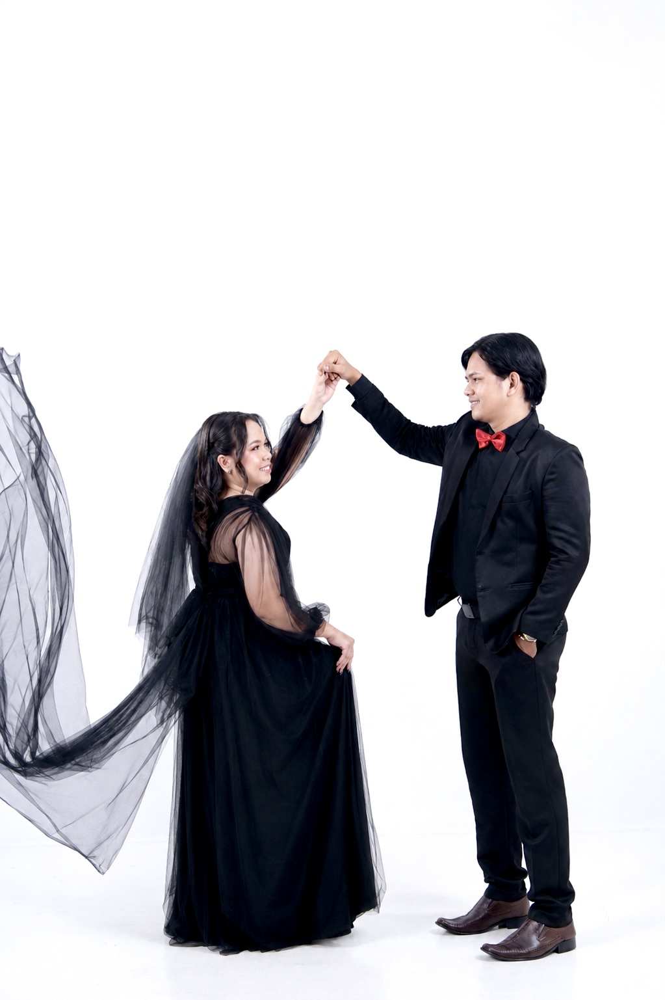

Paranak
Lizwan
Sitorus
Putra dari
Bapak M. Sitorus
dan Ibu L. Gultom
Horas · The Wedding Celebration of
07 · 11 · 2026
With joy in our hearts
Dengan penuh syukur kepada Tuhan, kami mengundang Bapak/Ibu/Saudara/i untuk hadir dalam sukacita pernikahan kami.
“Demikianlah mereka bukan lagi dua, melainkan satu. Karena itu, apa yang telah dipersatukan Allah, tidak boleh diceraikan manusia.”
Matius 19:6
The Bride & Groom
Counting down to
The Celebration
Acara Pertama
Sauciko Saung Cikunir Kopi
Jl. Cikunir Raya No. 88, Jakamulya, Bekasi Selatan
Lihat Lokasi ↗Pemberkatan
Gereja HKI
Jl. Sriwijaya, Batu Urip, Lubuklinggau Utara II
Lihat Lokasi ↗Perayaan Adat
BPU Bagas Raya
Lubuk Kupang, Lubuklinggau Selatan I
Lihat Lokasi ↗Our Families
Keluarga besar Sitorus
Keluarga besar Gultom
Keluarga besar Aritonang Raja Gukguk
Keluarga besar Simbolon
Our Journey
A story written with grace

IBerawal dari perkenalan singkat melalui teman kampus Naomi dan satu punguan Sitorus, kami memilih untuk saling mengenal dan menjalani hari demi hari bersama.

IISetelah melewati banyak cerita, tawa, perjalanan, dan proses, kami mengikat janji di hadapan keluarga untuk melangkah menuju tahap berikutnya.

IIITujuh tahun setelah perkenalan sederhana itu, kami mengucapkan janji untuk terus berjalan bersama dalam setiap musim kehidupan.
Captured Moments
Kenangan yang kami simpan,
cerita yang kami bagikan.
Share the moment
Bagikan momen bahagia bersama kami menggunakan hashtag ini.
Kindly dress in
Kami akan berbahagia melihat Anda dalam nuansa warna berikut.
The pleasure of your reply
Konfirmasikan kehadiran dan tinggalkan doa terbaik untuk kami.
A thoughtful gesture
Kehadiran dan doa Anda adalah hadiah terindah. Bagi yang ingin menyampaikan tanda kasih, tersedia pilihan transfer atau pengiriman hadiah fisik.
Rekening Naomi
675 510 2435Naomi ArgethaRekening Lizwan
566 057 2751Lizwan Sitorus